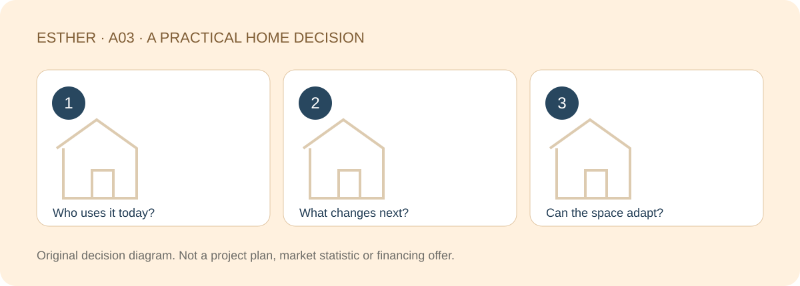

A HOME THAT FITS YOUR LIFE
2+1 Bedroom vs 3 Bedroom in Johor Bahru: Which Fits Your Future?
Sources checked：2026-10-26 · By Esther, Real Estate Negotiator

Direct answer
Choose by what each room needs to do, not by the number in the brochure. A “+1” is not automatically a suitable bedroom, while a three-bedroom layout is not automatically more usable. The right fit supports today’s overlapping activities and gives you realistic flexibility for the next stage of life.
Browse article sections
Check what the “+1” actually means
Ask for the room’s use on the applicable plan, its dimensions, windows, ventilation and access. A bed in a display does not establish that the space is an approved or suitable long-term sleeping room. Naming conventions can differ between projects.
A labelled third bedroom may also be less useful than expected if your furniture and circulation do not fit. Compare dimensioned plans rather than treating the sales description as a common standard. Record missing information before making a layout decision.

List the activities that happen at the same time
| Household situation | Test | Easy to miss |
|---|---|---|
| Two people working at home | Separate calls and privacy | A shared dining table may not work all day |
| Planning for children | Changing room uses over time | Care space and storage |
| Parents visiting | Frequency, bathroom route and privacy | A few visits versus everyday comfort |
| Solo buyer with hobbies | Work, exercise and collections | A flexible room becoming permanent storage |
You do not need to predict every life event. Separate daily overlap from occasional needs. Two people regularly taking calls deserve a different weight from a guest staying a few nights a year. A room-use schedule makes that difference visible.
Draw the furniture and door movements
Use your expected bed, desk, wardrobe and storage dimensions. Mark the path when a door opens, a chair is pulled out and someone walks past. Include power, network access and cooling arrangements, asking what alterations are permitted.
Do not assume you can remove a wall, enclose a balcony or add a loft to make the plan work. Structure, approved use and applicable management restrictions need checking. Useful flexibility comes from workable layouts and furniture, not an unverified renovation idea.

Compare what the extra room costs you elsewhere
Consider the full combination: current unit terms, usable space, upkeep, shared charges where applicable, parking and household routes. This article does not assert a fixed price gap between layouts or confirm live stock.
A third room used every day may justify clearer separation. A rarely used guest room may not justify squeezing the living area, kitchen and storage you use throughout the year. Compare the trade-off in your routine rather than declaring either layout universally better.
Try a week of room use
Map a normal week: work calls, sleep, hobbies and visits. Frequent overlap between activities needing privacy may justify a separate room. Rare overlap may allow a shared arrangement. This does not predict family changes; it makes the difference between daily value and occasional use easier to discuss.
Make a three-stage room-use brief
- Now: who uses each space, when and for how long?
- Next: what likely family or work changes should be allowed for?
- Adaptation: what can share a room and what needs separation?
- Non-negotiables: light, ventilation, privacy and furniture clearance.
Use the brief to shortlist a few plans and ask the project team for evidence. No project’s 2+1 or three-bedroom availability is confirmed here. In particular, a one-bedroom-plus-study plan must not be presented as a two-bedroom-plus-one alternative.
Explore a project only if the basic fit matches
If Kebun Teh and condo living already suit your search, the existing The Celestz page is one place to investigate actual plans and specifications. This does not confirm a price match, 2+1 availability, stock, access suitability or management performance. Check the exact unit and documents first.
Investigate The Celestz specifications ↗
Frequently asked questions
Can I treat every “+1” as a third bedroom?
No. Verify approved use, dimensions, windows, ventilation and the relevant conditions rather than relying on the label.
Do we need three bedrooms before having a child?
Not automatically. Compare timing, care arrangements, usable space and your ability to adapt later.
Should occasional parental visits decide the layout?
Include comfort and privacy, but weigh visit frequency against how you use the home every day.
Is total floor area enough to compare?
No. Room proportions, corridors, storage and circulation can differ even at similar stated sizes.
Compare layouts around your household needs
Share the part of your home search you want to clarify, your budget range and a suitable time to chat. A viewing or appointment is confirmed only after arrangements are agreed.
Discuss my home search with EstherThe editable message identifies this guide. Nothing is sent until you choose to send it. No identity or financial documents are needed in an initial chat.Sources and scope
Checked：2026-10-26。Practical comparisons and checklists are original editorial guidance, not market statistics, a professional inspection or personalised legal, tax or financing advice. Project details and transaction-specific requirements need separate verification. Historical source dates do not establish a new policy announcement. No loan approval, rental, appreciation, search ranking or AI citation is guaranteed.